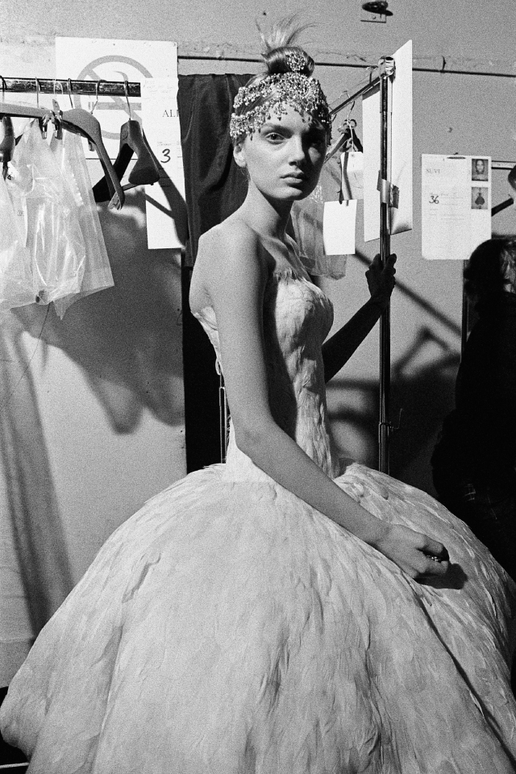

lace dresses cinched with Celtic buckles to convey a much grander vision of the country at peace with its place in the British Empire.
McQueen turned his attention to England with The Girl Who Lived In The Tree (Autumn/Winter 2008), a collection inspired by The British Empire, queens of England past, the Duke of Wellington, toy soldiers and punk princesses. It was to be one of McQueen’s most romantically nationalistic collections. Centering around a fairy-tale a girl who descends from a tree to marry a prince and then become queen, the first half of the collection focused on the girl’s life before she met the prince, and featured designs with a slender silhouette that emphasized the punk princess, prior to the transformation. What followed was an altogether more majestic turn as the princess became queen. Column dresses crafted from patterned sari silks referenced the grandeur of the Raj, and a regal cape of red silk with a high ruffled neck spoke of the British Empire at the height of its pomp. Regimental-style jackets trimmed with gold frogging, feathered gowns, Swarovski crystals, rich satins and crimson velvets were cut around tight-fitting bodices and paired with exaggerated skirts, creating a silhouette reminiscent of the 1950s haute couture worn by a young Queen Elizabeth II.
Photograph by Anne Deniau